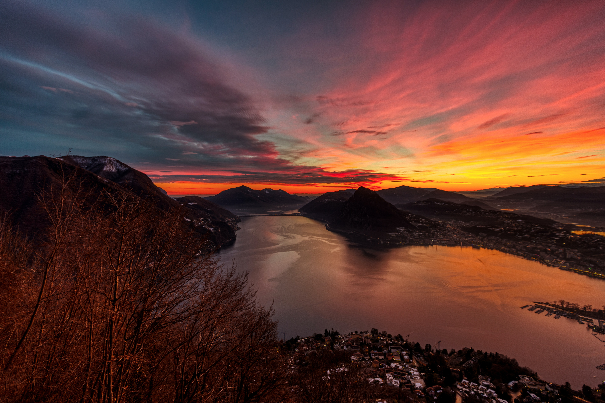

|
HOME | ABOUT | DESTINATION | CONTACT US |
|---|
 |
GenevaExplore Geneva and its stunning lake on a unique a sightseeing cruise. Admire the beauty of the Mont-Blanc mountain, the surrounding Swiss Alps, and other landmarks while learning about the area from your audio guide. Download the cruise app CGN Tours with all relevant information on the spot. Hear about every landmark you pass by and learn key facts about them from the audioguide. Begin your tour from the Pierres du Niton, cruising towards the Pointe à la Bise. 👈️CLICK THE IMAGE FOR MORE DETAILS |
|---|---|
BernBern, the capital city of Switzerland, is built around a crook in the Aare River. It traces its origins back to the 12th century, with medieval architecture preserved in the Altstadt (Old Town). The Swiss Parliament and diplomats meet in the Neo-Renaissance Bundeshaus (Federal Palace). The Französische Kirche (French Church) and the nearby medieval tower known as the Zytglogge both date to the 13th century. CLICK THE IMAGE FOR MORE DETAILS👉️ |
 |
 |
GrindelwaldOne of Switzerland's chief mountaineering, summer, and winter resorts, Grindelwald village is the starting point for climbing the First (7,113 ft), which is reached by a chair lift 3,720 ft in length. The valley possesses excellent pastures and fruit trees. 👈️CLICK THE IMAGE FOR MORE DETAILS |
LuganoLugano, the largest town in the holiday region of Ticino, is not only Switzerland's third most important financial centre and a conference, banking and business centre, but also a town of parks and flowers, villas and sacred buildings. With Mediterranean flair, Lugano offers all the advantages of a world-class city, combined with the cachet of a small town. CLICK THE IMAGE FOR MORE DETAILS👉️ |
 |
 |
LucerneEmbark on a day trip from Lucerne and ascend Mount Pilatus by cable car. Go on a hike and kick pack on the panorama terrace, descended the mountain by cogwheel railway, and complete your experience with a return journey by boat. Depart Lucerne and relax aboard a comfortable coach on the drive to Kriens. Then, climb aboard the panoramic gondolas and journey to Fräkmüntegg to board the aerial Dragon Ride cable car up the mountain. 👈️CLICK THE IMAGE FOR MORE DETAILS |